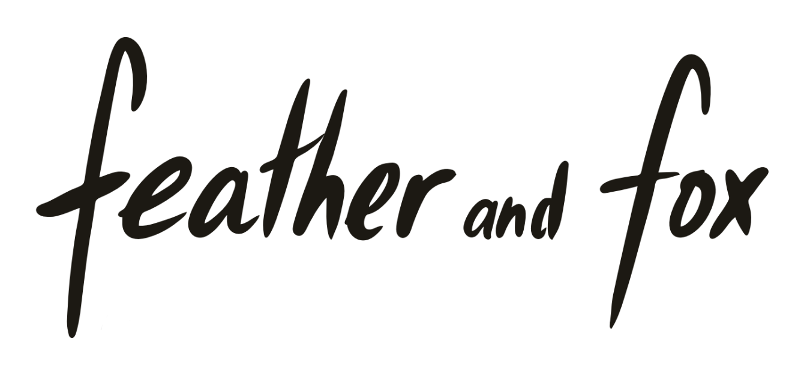

ABOUT
AGENDA
MEDIA
CONTACT
AGENDA
Here are our planned and past bals (excluding private events):
Tour Dates
31.05.2025 - Diest (BE),
Dafodil Festival
05.06.2025 - Bologna (IT),
Reno Folk Festival
20 + 21.06.2025 - Mattstedt (DE),
Mattstedt Folk Weekend
24.07.2025 - Hamburg (DE),
13th European Music Therapy Conference
26.09.2025 - Hamburg (DE),
Nord Folk Festival
20.11.2025 - Hingene (BE),
Winterdans @ Kasteel d'Ursel
See Past Dates
Hide Past Dates
Past Dates
2025
27.04.2025 - Paris (FR), Paris Bal Folk
25.04.2025 - 's-Hertogenbosch (NL), Drakenbal
19.04.2025 - Boutersem (BE), ComSiBal Festival
11 + 12.04.2025 - Pielenhofen (DE), Ratisbonne Festival
22.03.2025 - Antwerpen (BE), BalAFolk
14.03.2025 - Chemnitz (DE), MärzTanz Festival
16.02.2025 - Berlin (DE), TFFB – Tanz & Folk Festival Berlin
11.01.2025 - Leipzig (DE), Kulturnhalle (Tanzhaus*Folk e.V.)
2024
28 + 30.12.2024 - Colditz (DE), Silvester*Folk
21.12.2024 - Forrières (BE), Bal des Libellules de Noël
08.11.2024 - Vilnius (LT), Infinitumball
31.10.2024 - Steenwijk (NL), Cadansa (Open Stage)
20.10.2024 - Göttingen (DE)
19.10.2024 - Hamburg (DE)
03.10.2024 - Bonn (DE), Annabergfest
28.09.2024 - Liège (BE)
14.09.2024 - Simmelsdorf (DE), SimmelFolk Festival
18.08.2024 - Leipzig (DE), Kulturnhalle (Tanzhaus*Folk e.V.)
04.08.2024 - Gennetines (Open Stage)
08.06.2024 - Bologna (IT), Reno Folk Festival - Finals of the Mauro Burnelli contest: first place and public vote winners!
03.05.2024 - Krakow (PL), BalMostFolk Festival
15.03.2024 - Berlin (DE), Wabe (Spreefolk e.V.)
09.03.2024 - Namur (BE), le p'tit bal à Oli
08.03.2024 - Huissen (NL), Landgoed De Brouwketel (Huiskamerbal)
25.02.2024 - Warsaw (PL), balfolk.pl festival Open Stage
07.01.2024 - Berlin (BE), one-year anniversary bal
2023
28 + 29.12.2023 - Colditz (DE), Silvester*Folk
16.12.2023 - Bonn (DE)
29.10.2023 - Steenwijk (NL), Cadansa (Open Stage)
17.10.2023 - Leipzig (DE), live music for Queering Balfolk
17.09.2023 - Simmelsdorf (DE), Simmelfolk Festival (Open Stage)
27.07.2023 - Gennetines (FR), Open Stage
05.07.2023 - Berlin (DE), Haus der Sinne (Spreefolk e.V.)